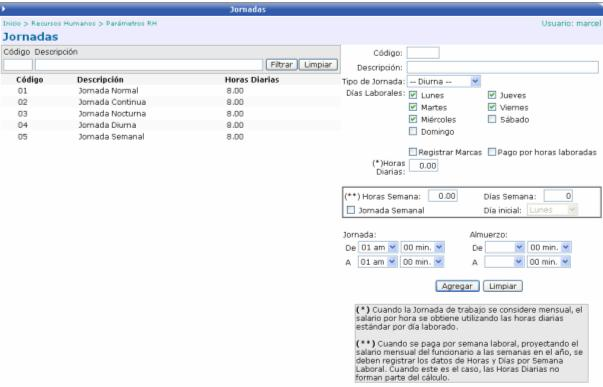

Aquí se establecen las diferentes jornadas de trabajo que maneja la empresa.
Se deben definir los días laborales, el tipo de jornada (diurna, mixta, nocturna, parcial, vespertina), el horario de la jornada, la cantidad de horas diarias (estro para cuando la jornada de trabajo se considere mensual, el salario por hora se obtiene utilizando las horas diarias estándar por día laborado), la cantidad de horas a la semana y cantidad de días a la semana (esto para cuando se paga por semana laboral, proyectando el salario mensual del funcionario a las semanas en el año, se deben registrar los datos de Horas y Días por Semana Laboral. Cuando éste sea el caso, las Horas Diarias no forman parte del cálculo.) y si aplicará, el horario de almuerzo y el registro de marcas.
Si la Jornada es Semanal, se deberá de indicar el día de inicio de la jornada para realizar el respectivo cálculo.
